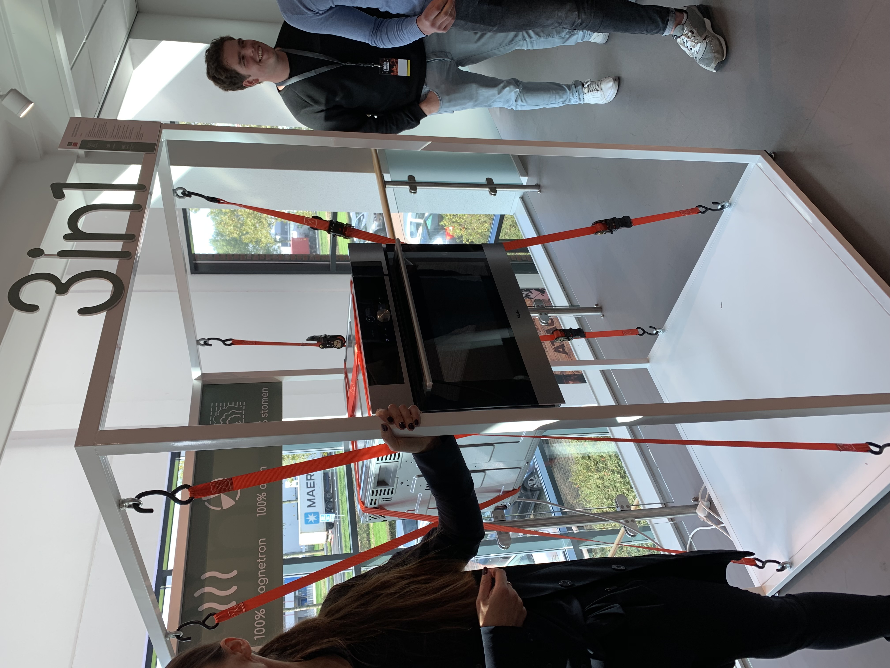

Inzicht in het brein
Tijdens de masterclass van Ilke Oner Master Your Mind & Own Your Life gingen we het hebben over hoe het brein werkt en de op welke manier je dit
brein het beste kan bedienen. De eerste stap hierbij is het meer kennis krijgen van het brein. Het heeft namelijk maar een taak en dat is overleven.
om dit te doen trekt hij snel conclusies en vult hij dingen in, maar is ook liever lui dan moe. Het brein is al oeroud en weinig geëvolueerd, het
heeft een voorkeur voor vet en suiker om te overleven.
Inzicht in het 5G model
Dit wetende ging ze verder met het 5G model. Dit model bestaat uit een cirkel met een vijftal begrippen die met elkaar in verband staan: Gebeurtenis >
Gedachten > Gevoel > Gedrag > Gevolg. Gevoelens en gedachten komen voort uit onze overtuigingen en conditionering. De conditionering gebeurt vanaf de
geboorte tot ongeveer het 7e levensjaar. Het wordt bepaald door cultuur, onderwijs, opvoeding etc.
Het brein in ingesteld op het vermijden van pijn boven het verkrijgen van plezier. Wel is voor iedereen plezier anders en dat maakt dan ook wie jij bent.
95% van wat er in je gedachte omgaat onbewust en gebeurt automatisch met zo'n 50 gedachten per minuut.
Oefening conditionering
Vervolgens mochten wij zelf een aantal hersenoefeningen doen. De eerste was het opschrijven van een vijftal mensen die jou inspireren. Om vervolgens een woord
bij iedere persoon te zetten. Deze woorden bij elkaar moeten dan een projectie van jezelf voorstellen.
Body, Mind & Soul
Na deze oefening zijn we verder gegaan met het tweede deel van de workshop. Deze ging meer in op je lichaam en je ziel. Het is wetenschappelijk bewezen dat meer
mensen tegenwoordig overprikkeld zijn door de vele prikkels tegenwoordig. Veel meer dan dat er in de middeleeuwen waren. Toch kan je er wel wat aan doen om minder
snel overprikkeld te raken. Ademhaling wordt gezien als een afspiegeling van hoe je leeft. Bij angst ga je anders ademen dan wanneer er niks is. Dit heeft grote
impact op je brein en lichaam. De hoeveelheid ademhalen zegt veel over de gemiddelde levensduur, zie hieronder:
Reflectie
Ik vond het een erg interessante masterclass en ik vond dat Ilke het ook erg goed en duidelijk vertelde. Ook vind ik dit thema erg interessant om meer over te weten
omdat het veel impact heeft op mensen zowel binnen als buiten het bedrijfsleven.
Begin van de dag
Aan het begin van deze dag bij het kookcollege Wijchen mochten wij onze plannen van aanpak presenteren. Ieder groep presenteerde zijn plan
en vertelde daarbij de keuzes die gemaakt waren en waarom. Wij hadden ons verslag al af en hadden een presentatie gemaakt om hem te presenteren.
Voor ons plan van aanpak kan je kijken bij het kopje project.
De opdracht
Vervolgens mochten we na de lunch beginnen met het koken. De opdracht was om uit een kist met producten een gericht te maken wat niet zo standaard
was en waarbij de ingrediënten goed met elkaar gecombineerd werden. Wij vormde een groepje met de projectgroep van Thijmen & Alfred.
Ons idee
Al vrij snel het ik iets in m'n hoofd wat mij wel leuk leek om te maken. Dit was het maken van een herfstgerecht waarbij ons vlees centraal zou staan.
Hierbij zat dus telkens een stukje vlees met een aantal winterse groente (zoete aardappel en spruit) en een pompoensoepje. Het idee was om in dit pompoensoepje
venkel en stukjes overgebleven vlees te doen. Erg leuk dus!
Doel van de opdracht
Het doel van de opdracht was het in een team, goed gestructureerd samenwerken om een mooi resultaat te krijgen. Hierbij was planning en organisatie een belangrijk
element. Er werd een planning gemaakt wanneer wie klaar moest zijn en wij moesten ervoor zorgen dan klaar te zijn. Zo moesten we over elk deel nadenken hoelang het zou duren.
Het vlees duurde langer dan de soep en de spruitjes, dus dat moest eerder. De achterliggende opdracht was, naast het koken, erg interessant.
Het resultaat
De resultaten van de verschillende groepjes waren verbluffend. Erg mooie gerechten met uitdagende onderdelen. Mooi om te zien. Dit was die van ons:
Hier een aantal foto's van de andere groepjes:
Reflectie
Het was een erg leerzame en leuke dag. Zowel de achterliggende opdracht als het koken was erg leuk. Ook was de opdracht goed voor het groepsgevoel en een mooie start van alle
projecten en de projectperiode. Erg leuk dus!
Presentatie
We kwamen binnen op de plek waar we moesten zijn in een hele mooi aangeklede ruimte wat normaal het magazijn was. Het eerste wat op het programma stond was de presentatie over wat
ATAG allemaal doet en wat voor een bedrijf het is. Hierbij werd benoemd dat ze steeds meer bezig zijn met het nadenken over Co2 neutrale producten en de opdracht die zij daarbij uit
hadden gezet. Over het bedrijf zal ik niet veel vertellen omdat we er ons project hebben uitgevoerd.
Rondleiding
Vervolgens werden we rondgeleid binnen ATAG. Als eerst gingen we langs de Showroom met de drie verschillende merken: Etna, Pelgrim, ATAG. Het verschil werd hier erg duidelijk door de atmosfeer
rondom de producten. Daarna gingen we door naar het magazijn waaruit de producten getransporteerd worden. Nadat we overgestoken waren naar het volgende gebouw kregen we een lekker stukje kip van
een co2 neutrale kookplaat.

Daarna werden we rondgeleid in het R&D gebouw, waar wij ook zitten met ons project. Erg leuk om te zien!
Afsluiter
Na de rondleiding konden we lekker eten en gingen wij vervolgens om tafel met onze opdrachtgever. Jan van Os was onze begeleider voor het project en vertelde ons wat de opdracht was en wat de verwachtingen
waren. Al vrij snel zaten we op een lijn en hadden we eigenlijk al wel zin om te beginnen bij ATAG. Leuke dag dus!

NxP
Begin van de dag kwamen we aan bij NxP. Mijn eerste indruk was een enorm bedrijf met goede beveiliging. Vervolgens mochten we naar binnen en kregen we een presentatie over wat ze allemaal doen en hoe ze zijn
gegroeid tot waar ze nu zijn. Ik vond het erg interessant om te horen wat ze doen en hoe groot ze eigenlijk wel niet zijn. Het ging over hoe de chips op een plak geproduceerd worden en wat de risico's zijn bij
dit proces. Ik had hier nog weinig verstand van dus vond het interessant om te zien! Wel vond ik het jammer dat we maar in een ruimte zaten en verder niks zagen van het bedrijf..., maar de reden was begrijpelijk.
Pitstop
Na presentie gingen we verder met de pitstop. Hierin moesten we presenteren hoe onze groep samenwerkt en welke afspraken er gemaakt zijn.

Voor meer info over onze samenwerking, zie project!